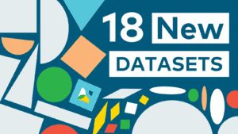

Le Lacuna Fund publie 18 nouveaux ensembles de données d’IA permettant aux communautés locales de relever des défis dans les domaines de l’agriculture, du climat, de la santé et des langues
12 March 2025
Le Lacuna Fund publie 18 nouveaux ensembles de données d’IA permettant aux communautés locales de relever des défis dans les domaines de l’agriculture, du climat, de la santé et des langues
Aujourd’hui, nous sommes heureux d’annoncer la publication de dix-huit nouveaux ensembles de données pour entraîner l’intelligence artificielle dans les domaines de l’agriculture, du climat, de la santé et du traitement automatique du langage naturel (TALN). Ces ensembles de données exploitent le potentiel de l’IA pour résoudre des problèmes sociaux et économiques urgents en Afrique, en Asie et en Amérique latine, ainsi que dans les communautés à faible revenu aux États-Unis.
Pour en savoir plus sur ces ensembles de données et sur la manière d’y accéder, voir ci-dessous !
Le Lacuna Fund est une coalition de bailleurs de fonds, de scientifiques et d’utilisateurs de données qui s’engagent à combler les lacunes en matière de données et à rendre l’apprentissage machine et l’IA plus équitables, plus précis et plus accessibles dans le monde entier.
Nous tenons à exprimer notre profonde gratitude à nos bailleurs de fonds, dont la Fondation Rockefeller, Google.org, le Centre de recherche pour le développement international du Canada, le ministère fédéral allemand de la Coopération et du Développement économiques (BMZ) et son initiative FAIR Forward, Wellcome, la Fondation Gordon et Betty Moore, la Fondation Patrick J. McGovern et la Fondation Robert Wood Johnson, qui rendent possible la création de ces ensembles de données.
Agriculture
Les ensembles de données sur l’agriculture du Lacuna Fund permettent d’exploiter la puissance de l’apprentissage machine pour atténuer les problèmes de sécurité alimentaire, stimuler les débouchés économiques et donner aux chercheurs, aux agriculteurs, aux communautés et aux décideurs politiques l’accès à des ensembles de données agricoles de qualité supérieure.
CropHarvest : éclairer la prise de décision concernant le développement agricole, les systèmes d’alerte précoce et le commerce en Afrique subsaharienne
Pays : Kenya, Mali, Togo, Rwanda, Ouganda, Éthiopie, Malawi, Zambie, Tanzanie, Namibie, Soudan et Nigeria
Contact : Catherine Nakalembe | cnakalem@umd.edu
CropHarvest permet de mieux comprendre les principaux types de production alimentaire en Afrique subsaharienne et peut contribuer à éclairer la prise de décision en matière de développement agricole, de systèmes d’alerte précoce et de commerce régional. Il s’agit d’un ensemble de données de télédétection mondial et open source pour la classification des types de cultures en Afrique subsaharienne – plus précisément au Kenya, au Mali, au Togo, au Rwanda, en Ouganda, en Éthiopie, au Malawi, en Zambie, en Tanzanie, en Namibie, au Soudan et au Nigeria.
L’équipe a étoffé un ensemble de données existant publié en 2021 en incluant les éléments suivants : de nouveaux points de données étiquetés à l’aide de Collect Earth Online, des données recueillies sur le terrain pour la cartographie des types de cultures, des images au niveau de la rue, un étiquetage collaboratif d’images et des données sur les prix. Par ailleurs, les données de Collect Earth Online ont été échantillonnées de manière aléatoire pour couvrir l’ensemble du pays, ce qui a permis de combler des lacunes importantes en matière de données sur les cultures et les rendements.
Auteurs et affiliations :
- NASA Harvest : Tseng, G.
- Université du Maryland, College Park : Zvonkov, I., Nakalembe, C.L. et Kerner, H.
Ensemble de données : https://github.com/nasaharvest/cropharvest
Améliorer les moyens de subsistance au Ghana et en Ouganda : ensemble de données agricoles collectées par des drones en vue d’estimer le rendement des cultures de noix de cajou, de cacao et de café
Pays : Ghana, Ouganda
Contact : Darlington Akogo | darlington@gudra-studio.com
Cet ensemble de données permet l’estimation des rendements, la détection et la classification des types de cultures, la détection et le comptage des fruits, ainsi que la détection du stade de maturité des fruits (non mûrs, mûrs et abîmés) pour trois produits qui sont d’importantes sources de revenus pour des millions de ménages en Afrique subsaharienne.
Il contient 14 870 images de drones, annotées avec des boîtes englobantes d’anacardiers, de cacaoyers et de caféiers collectées dans plusieurs exploitations au Ghana et en Ouganda. Les méthodes conventionnelles d’estimation des rendements sont coûteuses, laborieuses et chronophages, et sont sujettes à des erreurs dues à des observations incomplètes sur le terrain. Cela se traduit par de mauvaises estimations du rendement des cultures et entrave la capacité des agriculteurs à planifier et à gérer correctement leurs champs et leurs filières de production. Cet ensemble de données contribuera à transformer l’agriculture africaine en agro-industrie, en facilitant la mise au point de solutions d’estimation des rendements qui permettront aux agriculteurs de prendre de bonnes décisions commerciales. La disponibilité immédiate d’informations clés sur la production agricole favorise une récolte en temps opportun, ce qui aide les agriculteurs à garantir des produits sains et frais et, qui plus est, de meilleures ventes.
Auteurs et affiliations :
- KaraAgro AI : Darlington Akogo, Cyril Akafia, Harriet Fiagbor, Stephen Torkpo, Christian Kusi
- AI Lab de Makerere : Joyce Nakatumba-Nabende
Ensemble de données : https://huggingface.co/datasets/KaraAgroAI/Drone-based-Agricultural-Dataset-for-Crop-Yield-Estimation
Santé
Les ensembles de données sur la santé du Lacuna Fund comblent le fossé des disparités en matière de santé en fournissant des ensembles de données d’apprentissage machine précis et robustes qui aident les prestataires et les patients à prendre des décisions qui conduisent à des résultats plus équitables en matière de soins de santé.
Ensemble de données sur l’anesthésie peropératoire et ses résultats : améliorer les résultats pour les patients en prédisant le risque de mortalité et la récupération postopératoire
Région : Afrique subsaharienne
Contact : Bhiken Naik | bin4n@uvahealth.org
Cet ensemble de données peut être utilisé pour identifier des modèles de pratiques d’anesthésie peropératoire et prédire la durée du séjour postopératoire et le risque de mortalité sur la base de variables peropératoires. Il comprend 2 066 dossiers d’anesthésies peropératoires de deux centres universitaires d’Afrique subsaharienne. L’équipe a photographié les dossiers d’anesthésie peropératoire à l’aide d’un smartphone, a anonymisé les images et les a téléchargées en toute sécurité sur un serveur conforme aux normes HIPAA. En combinant des techniques de vision informatique par IA et d’extraction manuelle, l’équipe a recueilli les données peropératoires complètes suivantes : des données démographiques, des données sur les médicaments, des données hémodynamiques, des données physiologiques, le type d’anesthésie, le type de chirurgie, la durée du séjour postopératoire et la mortalité postopératoire à 30 jours.
Les données d’anesthésie peropératoire englobent un large éventail d’informations qui sont essentielles pour les soins prodigués aux patients pendant les interventions chirurgicales. Toutefois, il est particulièrement difficile d’obtenir des informations aussi détaillées dans les pays à revenu intermédiaire de la tranche inférieure (PRITI), où les ensembles de données électroniques actuels sur l’anesthésie peropératoire sont souvent limités. En conséquence, un nombre important d’éléments de données clés, qui pourraient être essentiels à la prise de décision clinique et à la recherche, sont soit manquants, soit non disponibles. Cette limitation entrave la capacité à comprendre pleinement et à améliorer les résultats pour les patients dans les PRITI. Cet ensemble de données comble donc une lacune critique en élaborant une méthode incluant tous les éléments de données des dossiers d’anesthésie peropératoire.
Auteurs et affiliations :
- Université de Virginie : Dr Bhiken Naik
- Faculté de médecine et de pharmacie, Université du Rwanda et Hôpital King Faisal, Université africaine des sciences de la santé : Dr Paulin Banguti
- Safe Surgery Afrique du Sud : Dr Hyla Kluyts
- Université de Virginie : Ryan Folks
Ensemble de données : https://portal.ithriv.org/#/public_commons/project/d9fc062c-64c9-4481-80e7-3db4aba17e00
Ensemble de données sur la segmentation des tumeurs cérébrales en Afrique (BraTS-Africa)
Pays : Nigeria
Contact : Udunna Anazodo | udunna.anazodo@mcgill.ca
L’ensemble de données BraTS-Africa est une agrégation de scans d’imagerie par résonance magnétique (IRM) provenant de six centres au Nigeria visant à fournir un ensemble de données public pour la mise au point de solutions d’apprentissage machine pour la gestion des tumeurs cérébrales chez les patients africains. Cet ensemble de données sert de cadre de départ pour une expansion future dans d’autres régions d’Afrique. L’équipe a traité et annoté un total de 584 images provenant de 146 scans de patients. Quatre-vingt-quinze de ces scans sont présumés présenter un gliome protubérantiel infiltrant, et 51 d’entre eux d’autres types de tumeurs du système nerveux central (SNC). Des radiologues experts ont annoté trois sous-régions tumorales distinctes pour délimiter la tumeur en expansion, le noyau tumoral nécrotique et les sous-régions œdémateuses péri-tumorales /tissus infiltrés.
Avant cette étude, il n’existait pas d’ensemble de données d’imagerie cérébrale annotées et complètes provenant d’Afrique et disponibles au public. Cette étude a comblé cette lacune pour garantir que de nouvelles solutions d’apprentissage machine pour la gestion des maladies neurologiques, telles que les tumeurs cérébrales, peuvent répondre aux besoins cliniques non satisfaits en Afrique subsaharienne.
Auteurs et affiliations :
- Laboratoire d’intelligence artificielle médicale (MAI Lab) (Lagos, Nigeria) : Maruf Adewole, Abiodun Fatade, Oluyemisi Toyobo, Farouk, Dako, Udunna Anazodo
- The National Hospital (Abuja, Nigeria) : Feyisayo Daji, Chinasa Kalaiwo
- Hôpital universitaire de Lagos : Olubukola Omidiji
- Hôpital universitaire d’État de Lagos : Rachel Akinola
- Centre de diagnostic NSIA-Kano : Mohammad Abba Suwaid
- Centre médical fédéral (Umuahia, Nigeria) : Kenneth Aguh
- Lily Hospital (Bénin, Nigeria) : Mayomi Onuwaje
- Université de Pennsylvanie (Philadelphie, États-Unis): Farouk Dako
- Université d’Indiana (Indianapolis, États-Unis): Spyridon Bakas
- Scripps Clinic Medical Group (San Diego, États-Unis): Jeffery Rudie
- Université McGill (Montréal, Canada): Udunna Anazodo
Ensemble de données : https://www.cancerimagingarchive.net
Microscopie sur smartphone assistée par l’IA pour la détection des parasites responsables de la diarrhée
Pays : Népal
Contact : Bishesh Khanal | bishesh.khanal@naamii.org.np
Cet ensemble de données permet de détecter les parasites responsables de la diarrhée dans les zones rurales aux ressources limitées, en particulier dans les pays du Sud, où l’accès à des outils de diagnostic coûteux est limité. Il contient environ 400 000 images de lames microscopiques d’échantillons d’eau, de légumes et de selles provenant de quatre provinces différentes du Népal, ce qui en fait l’un des plus grands ensembles de données de ce type. L’équipe a prélevé des échantillons d’eau de différentes sources (eau du robinet, eau en bouteille, lac, rivière, étang, ruisseau, eau de source, zone humide, puits et puits de forage) et a utilisé sept types de légumes différents. En utilisant l’ensemble de données et les annotations disponibles, cette équipe a entraîné différents modèles d’apprentissage profond pour détecter automatiquement les parasites, en particulier les kystes de Giardia et de Cryptosporidium.
Les images des échantillons ont été capturées à l’aide d’un smartphone et d’un microscope en fond clair avant d’être téléchargées sur une plateforme en ligne de collecte et d’annotation de données. Cette plateforme permet à plusieurs utilisateurs de télécharger des images d’échantillons avec des fonctions de contrôle de la qualité basées sur des autorisations. Les utilisateurs autorisés peuvent examiner les images téléchargées, les approuver ou les rejeter, ajouter des commentaires sur des images individuelles et filtrer l’affichage des échantillons pour une période ou une province donnée. Dans un premier temps, cet ensemble de données s’est concentré sur le Népal, mais il est conçu pour être applicable dans des régions similaires à travers le monde.
Auteurs et affiliations :
- Institut népalais de recherche en mathématiques appliquées et en informatique (NAAMII) : Bishesh Khanal, Udit Chandra Aryal, Safal Thapaliya
- Institut des sciences appliquées de Katmandou (KIAS) : Dr Basant Giri, Dr Susma Giri, Dr Bhanu Neupane, Asmita Adhikari, Asmita Karki, Ramdeep Shrestha, Aayusha Upreti, Pramikshya Bagale, Deepa Prajapati, Prashamsa Shrestha, Celeus Baral
- Nyaya Health Nepal, Bayalpata : Mandeep Pathak, Ekendra Kunwar, Khadak Chaudhary, Sunil Buda, Tapendra Kunwar, Ramesh Badahit, Nim Prakash Sharma
- Laboratoire provincial de santé publique (PPHL) – Janakpur : Shravan Kumar Mishra, Santosh Kumar Yadav, Jitendra Kumar Sah, Amrendra Kumar Mishra, Sarwajit Yadav, Ashish Jha
- Institut de santé infantile de Katmandou (KIOCH) – Damak : Bhagawan Koirala, Dr Sandeepa Karki, Dr Jayamani Shrestha
Ensemble de données : https://zenodo.org/records/13913469
Pour découvrir tous les ensembles de données sur la santé du Lacuna Fund, consultez la page : datasets/health/
Climat
Qu’il s’agisse de comprendre les effets du changement climatique sur la santé ou de renforcer la planification de l’électrification, les ensembles de données sur le climat du Lacuna Fund permettent aux communautés du monde entier de mieux s’adapter au changement climatique et d’en atténuer les effets.
Projet « Changement climatique, santé et intelligence artificielle » (CCHAIN) : données de santé publique pour les Philippines
Pays : Philippines
Contact : Thinking Machines Data Science | data-for-development@thinkingmachin.es
L’ensemble de données du Projet CCHAIN est un ensemble de données ouvertes, liées et prêtes à être analysées, contenant des variables validées relatives à la santé, au climat, à l’environnement et à la situation socio-économique, collectées au niveau du village (« barangay ») dans 12 villes des Philippines sur une période de 20 ans (2003-2022). Cet ensemble de données comprend des observations sur environ 17 maladies, recueillies lors de visites sur le terrain auprès du ministère de la Santé des Philippines et de l’Autorité statistique des Philippines. « Open Buildings » est une autre composante de cet ensemble de données, qui fonctionne également comme un ensemble de données autonome créé par l’équipe et qui contient 12 000 tracés de bâtiments qui montrent la densité des quartiers, les terrains et les niveaux d’urbanisation, ainsi que les zones qui n’ont pas encore été cartographiées dans OpenStreetMap. Chaque tracé a été dessiné en combinant l’inspection visuelle de l’imagerie satellite, les connaissances locales et la validation à partir des données d’enquête auprès des ménages, afin de couvrir tous les bâtiments présents dans la zone.
Aux Philippines, les chercheurs et autres utilisateurs finaux qui ont besoin de données de santé publique provenant d’établissements de santé ruraux, jusqu’aux programmes nationaux, peuvent demander ces informations au ministère de la Santé des Philippines, où un comité d’examen prend les décisions finales d’approbation. Toutefois, ce processus ne répond pas encore à la définition de données véritablement ouvertes, puisque celles-ci devraient être fournies de manière proactive au public pour favoriser la transparence, l’innovation et la collaboration, sans qu’il soit nécessaire de demander ou d’obtenir des autorisations.
Les préoccupations en matière de confidentialité et de sécurité restent des obstacles importants à l’accès aux données, les agences essayant de trouver un équilibre entre les avantages pour le public et les risques de confidentialité. Un autre obstacle à l’accessibilité et à la disponibilité est la rareté des données numérisées au niveau communautaire en raison du manque de formation du personnel et des contraintes budgétaires. En créant un ensemble de données ouvertes et prêtes à être analysées avec le Project CCHAIN, nous allégeons la charge des utilisateurs qui, à défaut, devraient déployer des moyens logistiques considérables et des compétences multidisciplinaires pour collecter et traiter des données provenant de sources, de formats et de zones géographiques variés. En se concentrant sur le village ou le « barangay », la plus petite unité administrative des Philippines, il est également possible de désagréger les risques sanitaires pour les communautés vulnérables, en particulier celles qui vivent dans des habitats informels, et de fournir des informations exploitables pour les gouvernements locaux.
Auteurs et affiliations :
- Thinking Machines Data Science, Inc. : Patricia Anne Faustino, JC Albert Peralta, Veronica Marie Araneta, Dafrose Camille Bajaro, Abigail Moreno
- Epimetrics, Inc. : John Q. Wong, Anne Kathlyn Baladad, Luis Antonio Desquitado, Matthew Limlengco, Carlos Miguel Resurreccion
- Observatoire de Manille : Dr Faye Abigail Cruz, Dr Julie Mae Dado, Leia Pauline Tonga
- Philippine Action for Community-led Shelter Initiatives, Inc. : Ericka Lynne Nava
Ensemble de données : https://thinkingmachines.github.io/project-cchain/
Ensemble de données sur la qualité de l’air dans les centres d’abattage du sud du Nigeria
Pays : Nigeria
Contact : Emmanuel Chukwuma | emmanuel.chukwuma@apse-ngo.org
Cet ensemble de données sur la qualité de l’air dans les centres d’abattage est le premier du genre dans le pays. L’ensemble des données localisées est capital pour la surveillance et la prévision de la qualité de l’air, ainsi que pour la modélisation précise de l’indice de qualité de l’air en vue d’émettre des alertes précoces et de modéliser les risques pour la santé. Les données ont été obtenues auprès des centres d’abattage du sud du Nigeria. L’équipe a recueilli des données d’échantillons représentatifs de divers États (Anambra, Enugu, Abia, Imo, Ebonyi et Delta) dans la zone de recherche. L’équipe s’est rendue dans 27 centres et a mené des enquêtes sur le terrain, recueillant plus de 200 000 valeurs numériques de concentrations de particules fines (PM) au moyen de 10 capteurs de qualité de l’air pour PM1, PM2,5 et PM10. En outre, des images aériennes ont été capturées à l’aide d’un drone à différentes hauteurs (10 m, 20 m, 30 m) pendant les heures d’ouverture ; les images seront exploitées avec l’imagerie satellite pour la prédiction des valeurs de PM.
Une enquête préliminaire indique que les centres d’abattage dans le pays en développement sont fortement tributaires du bois et parfois des pneus usagés pour la transformation de la viande. L’utilisation de ces articles pour la transformation de la viande libère une quantité importante de gaz polluants. Une épaisse fumée est visible dès le matin autour de ces abattoirs, lors des opérations de transformation de la viande. La fumée provenant de la combustion du bois, associée à un vent faible, peut entraîner des concentrations élevées de particules dans les abattoirs. L’exposition aux particules fines et au carbone noir émis dans les abattoirs a des effets néfastes sur la santé, avec une morbidité et une mortalité élevées, comme l’ont montré des études antérieures. Ce projet a été entrepris par Alliance for Progressive and Sustainable Environment (APSE), une ONG locale axée sur la durabilité environnementale (plus de détails ici : www.apse-ngo.org).
Auteurs et affiliations :
- Alliance for Progressive and Sustainable Environment : Emmanuel Chukwuma, Uche Okonkwo, Chukwuemeka Umeobi, Jervis Okafor, Sixtus Ezenwankwo, Shadrach Ugwu, Awonge Precious, Cynthia Egdede, Esther Eyo
Ensemble de données : https://drive.google.com/drive/folders/1BRrVgYN-O6s7EsnEgAUCGqINvvfiXZC8?usp=drive_link
Ensemble de données sur l’irradiation horizontale globale pour Maurice, Rodrigues et Agaléga
Pays : Maurice, Rodrigues et Agaléga
Cet ensemble de données comprend 146 025 lignes de données d’irradiation solaire en temps réel provenant de différents endroits autour de Maurice, de Rodrigues et d’Agaléga. Les données relatives à l’irradiation solaire (GHI en W/m2) couvrent la période de 2017 à 2021, à un intervalle d’une heure, et les heures de 7h00 à 18h00 chaque jour. Cet ensemble de données permet de visualiser en temps réel le profil d’irradiation solaire aux endroits spécifiés, ce qui permet d’améliorer l’évaluation et la planification de l’énergie solaire. L’équipe collecte actuellement des données (à partir de 2023) à un intervalle de 15 minutes et prévoit de mettre à jour ce référentiel de données pour tenir compte de l’évolution.
Les bénéficiaires visés par ce projet sont le gouvernement de Maurice, qui s’est fixé pour objectif de produire 60 % de l’électricité à partir de sources d’énergie renouvelables à l’horizon 2030. De même, l’Agence mauricienne des énergies renouvelables, qui a pour mission de veiller à ce que la demande énergétique du pays soit de plus en plus comblée par les énergies renouvelables et de respecter les engagements internationaux, peut utiliser ces données sur l’irradiation solaire et les mécanismes de prévision pour mieux gérer les centrales électriques du service public, réduire au minimum les émissions de carbone, garantir l’absence de perte de charge (blackouts) et favoriser une plus grande pénétration des projets photovoltaïques dans le pays. Avec des cartes solaires gratuites en ligne et des données sur l’énergie solaire ultra précises, les exploitants locaux de centrales photovoltaïques disposeront également d’informations précises pour l’évaluation des performances photovoltaïques. Par ailleurs, le grand public disposera d’une plateforme en ligne gratuite sur l’énergie solaire qui améliorera l’acceptation de la technologie photovoltaïque et augmentera la pénétration des technologies vertes dans le pays afin de réduire davantage les émissions de gaz à effet de serre. Enfin, les modèles d’apprentissage machine peuvent être entraînés pour les prévisions intrajournalières, journalières et même hebdomadaires des profils d’irradiation solaire.
Auteurs et affiliations :
- Université de Maurice : Yogesh Beeharry, Ravish Gokool, Yatindra Kumar Ramgolam, Aatish Chiniah
Ensemble de données : https://www.scidb.cn/en/detail?dataSetId=2b499b91a4464fffa9f60fc8b51da03e&version=V2
Données ouvertes et étiquetées sur les panneaux solaires pour mesurer l’adoption de l’énergie solaire à Madagascar
Pays : Madagascar
Contact : Fabienne Rafidiharinirina | f.rafidiharinirina@association-maidi.mg ou assomaidi@gmail.com
Cette équipe a annoté 2 125 images satellite de Google Earth et 9 202 images de drones, combinant des vues basse et haute définition de panneaux solaires à Madagascar. L’équipe de Madagascar Initiatives for Digital Innovation (MAIDI) a effectué des vérifications sur le terrain sur jusqu’à 25 % des images satellites et, au total, a annoté 22 488 polygones.
Cet ensemble de données aidera les scientifiques et les utilisateurs des données à développer un algorithme de détection des panneaux solaires afin de mesurer l’adoption de l’énergie solaire à Madagascar. Fait notable, ce projet représentait toutes les régions du pays ; au lieu de se concentrer uniquement sur les grandes villes, il couvrait également les villages moyens et petits, ainsi que les côtes et les montagnes.
Auteurs et affiliations : Fabienne Rafidiharinirina (Madagascar Initiatives for Digital Innovation)
Ensemble de données : https://openstat-madagascar.com/bdd/energie-et-environnement/131-donnees-sur-l-energie-solaire-et-labellisation-d-images-de-panneaux-photovoltaiques-a-madagascar
Ensemble de données sur l’énergie climatique pour l’infrastructure électrique hors réseau
Pays : Pakistan
Contact : Dr Zeeshan Shafiq | zeeshanshafiq@uetpeshawar.edu.pk
Cet ensemble de données comprend des mesures électriques en temps réel d’une zone climatique spécifique au Pakistan, la région de Kalam, illustrant la production et la demande d’énergie au sein d’une infrastructure électrique hors réseau. Il peut être utilisé pour la recherche dans l’analyse des systèmes énergétiques, les études sur le changement climatique, le génie électrique et les applications d’intelligence artificielle. Il comprend les tensions, les courants et les facteurs de puissance pour les systèmes triphasés et monophasés aux stades de la production, de la distribution et de la consommation. En outre, l’ensemble de données intègre sept paramètres climatiques différents provenant de l’ensemble de données ERA5 (fourni par le Copernicus Climate Change Service), générant un total de 85 596 points de données pour des paramètres tels que la température, le point de rosée, les composantes du vent, les précipitations, les chutes de neige et la couverture neigeuse.
Avec des données collectées toutes les cinq minutes du 3 juin 2023 au 24 octobre 2024, l’ensemble comprend plus de 45 millions d’instances couvrant les données de quatre micro-générateurs hydroélectriques, 26 transformateurs (en plus de quatre systèmes d’acquisition de données installés dans des microcentrales hydroélectriques) et 585 utilisateurs finaux. Grâce à un soutien local, l’équipe continuera à surveiller les données jusqu’en juin 2025.
Auteurs et affiliations :
- CISNR UET Peshawar : Zeeshan Shafiq, Prof. Dr Gul Muhammad Khan, Ing. Sarmad Rafique, Ing. Muhammad Bilal Khan, Ing. Umer Khan, Ing. Mansoor Khan, Ing. Niaz Khan, Ing. Musa Khan, Ing. Abdul Moiz
Ensemble de données : https://zenodo.org/records/14195731
Traitement automatique du langage naturel
Les ensembles de données pour les langues du Lacuna Fund créent des ressources textuelles et vocales librement accessibles qui alimentent les technologies de traitement automatique du langage naturel dans diverses langues dans des contextes de revenus faibles et moyens à l’échelle mondiale.
NaijaVoices : notre langue est notre force
Langues : haoussa, igbo et yoruba
Contact : Pour des partenariats, des collaborations, ou des questions, contactez info@naijavoices.com
Le projet NaijaVoices a recueilli 1 867 heures de discours et de données textuelles concernant plus de 5 000 locuteurs dans les trois principales langues nigérianes : le haoussa, l’igbo et le yoruba. Au moment de sa publication, il s’agit du plus grand ensemble de données vocales africaines multilocuteurs. L’ensemble de données comprend environ 1 917 686 instances – chaque instance est composée d’une piste audio, d’une transcription, de la langue de la transcription, de l’identifiant du locuteur, de son sexe et de sa tranche d’âge. Cet ensemble de données permet d’effectuer des tâches de TALN basées sur l’audio, telles que la reconnaissance automatique de la parole et la conversion du texte en parole. En outre, les phrases authentiques de l’ensemble de données peuvent améliorer les tâches de traitement automatique du langage naturel (TALN) basées sur le texte, y compris la modélisation du langage, l’étiquetage morpho-syntaxique et la reconnaissance d’entités nommées.
Les applications linguistiques de cet ensemble de données incluent la compréhension des profils sociolinguistiques, l’analyse des variations de prononciation, l’étude des différences phonétiques et phonémiques, et le développement des capacités de traitement automatique du langage naturel (TALN) pour les trois langues nigérianes. La méthode de NaijaVoices a intentionnellement incorporé un discours sur les populations marginalisées, telles que les femmes, les enfants et les personnes souffrant d’un handicap, ainsi que sur des sujets sous-représentés, tels que les systèmes de calcul traditionnels et l’agriculture. L’ensemble de données représente également diverses voix, avec plus de 5 000 participants présentant des modèles de locuteurs et des dialectes uniques.
Auteurs et affiliations : La communauté NaijaVoices (https://naijavoices.com/)
Ensemble de données : https://naijavoices.com/dataset
AFRIDOC-MT : corpus de traduction automatique au niveau des documents pour les langues africaines
Langues : amharique, haoussa, swahili, yoruba et zoulou
Contact : Jesujoba O. Alabi | jalabi@lsv.uni-saarland.de
AFRIDOC-MT est un ensemble de données de traduction multidirectionnelle au niveau des documents de l’anglais vers cinq langues africaines : l’amharique, le haoussa, le swahili, le yoruba et le zoulou. L’ensemble de données comprend 334 documents d’information sur la santé et 271 sur les technologies de l’information, tous traduits de l’anglais vers ces langues. Chaque domaine comporte au moins 10 000 phrases parallèles par paire de langues et prend en charge la traduction multidirectionnelle, permettant la traduction non seulement entre l’anglais et les langues africaines, mais aussi entre les langues africaines elles-mêmes.
Cet ensemble de données peut être utilisé pour évaluer la capacité des modèles existants de traduction automatique neuronale (TAN) et les grands modèles de langage (GML) pour traduire au niveau des documents et entraîner ces modèles. Récemment, la traduction au niveau de documents contenant des phrases multiples a suscité l’intérêt, les phrases étant traduites dans leur contexte plutôt qu’isolément. Auparavant, les efforts se concentraient sur les langues bien dotées en ressources, pour lesquelles des ensembles de données au niveau des documents sont facilement disponibles, et non sur les langues africaines à faibles ressources. En outre, il peut être utilisé pour la traduction au niveau des phrases et pour quelques autres tâches linguistiques s’il est correctement annoté.
Auteurs et affiliations :
- Université de la Sarre : Jesujoba O. Alabi, Israel Abebe, Miaoran Zhang, Dawei Zhu, Dietrich Klakow
- Centre de recherche allemand pour l’intelligence artificielle (DFKI): Cristina España-Bonet
- INRIA : Rachel Bawden
- Université McGill et Mila : David Adelani
- Université d’Ibadan : Clement Oyeleke Odoje, Idris Akinade
- National Institute of Informatics (NII) : Iffat Maab
- Selcom : Davis David
- Imperial College, Londres : Shamsuddeen Hassan
- Université de KwaZulu-Natal : Nokwanda Putini
- Université de Loughborough, Royaume-Uni : David Oluwajoju Ademuyiwa
- Université de Cambridge : Andrew Caines
Ensemble de données : https://github.com/masakhane-io/afridoc-mt
Masakhane-NLU : IA conversationnelle et ensembles de données de référence pour les langues africaines
Langues : amharique, éwé, haoussa, igbo, lingala, luganda, oromo, kinyarwanda, shona, sésotho, swahili, twi, wolof, xhosa, yoruba et zoulou
Contact : David Adelani | david.adelani@mila.quebec
Cette équipe a créé cinq ensembles de données d’IA conversationnelle et de référence pour 16 langues du continent africain : amharique, éwé, haoussa, igbo, lingala, luganda, oromo, kinyarwanda, shona, sésotho, swahili, twi, wolof, xhosa, yoruba et zoulou. Le premier ensemble de données, AfriXNLI, est un ensemble de données d’inférence en langage naturel utilisé pour déterminer la relation linguistique (implication, neutre et contradiction) entre deux phrases ; il comprend 1 050 paires de phrases par langue. Le deuxième ensemble de données, AfriMMLU, est un ensemble de données de questions-réponses à choix multiples basé sur les connaissances et couvrant cinq thématiques : les mathématiques élémentaires, la géographie de niveau secondaire, le droit international, les faits mondiaux et la microéconomie de niveau secondaire. L’équipe a recueilli 608 paires de questions-réponses par langue. Le troisième ensemble de données, AfriMGSM, a été créé comme un ensemble de données de questions-réponses en forme libre en mathématiques niveau école primaire, qui a été formé avec 258 paires de questions-réponses. AfriIntent, résultat d’une collecte de 3 200 phrases par langue, est un ensemble de données de classification d’intentions couvrant divers domaines tels que les services bancaires (par ex., « payer une facture »), la maison (par ex., « jouer de la musique »), la cuisine et la restauration (par ex., « confirmer la réservation »), les voyages (par ex., type de prise), et les services publics (par ex., « effectuer un appel téléphonique »). Enfin, en utilisant 3 200 phrases par langue, l’équipe a développé AfriSlot pour la classification des concepts dans des catégories telles que les produits alimentaires, les noms de langue, etc.
Ces cinq ensembles de données textuelles sont utiles pour les agents conversationnels dans les applications de la vie réelle telles que les services bancaires, les restaurants, les agences de voyages, et plus encore. L’équipe a créé des références solides pour évaluer les performances des grands modèles de langage tels que GPT-4o sur les langues africaines.
Auteurs et affiliations :
- Université McGill & Mila: David Ifeoluwa Adelani, Hao Yu
- SADiLaR: Andiswa Bukula, Mmasibidi Setaka, Rooweither Mabuya
- Université OntarioTech: En-Shiun Annie Lee
- Université de la Sarre: Israël Abebe Azime, Jesujoba O. Alabi
- Université de Toronto: Jian Yun Zhuang
- Université de Princeton: Happy Buzaaba
- Masakhane: Blessing Sibanda, Godson Kalipe, Jonathan Mukiibi, Salomon Kabongo, Lolwethu Ndolela, Nkiruka Odu, Salomey Osei, Sokhar Samb, Tadesse Kebede Guge, Juliet Murage
- Imperial College: Shamsuddeen Hassan Muhammad
Ensemble de données : https://github.com/masakhane-io/masakhane-nlu
Ensemble de données multilingue IPI Lacuna
Langues : luganda, lumasaba, haoussa et kanuri
Contact :
- Andrew Katumba | katumba@mak.ac.ug
- Milena Haykowska | milena.haykowska@clearglobal.org
- Peter Nabende | peter.nabende@gmail.com
Cet ensemble de données contient des phrases annotées avec des informations personnelles identifiables (IPI) en luganda, lumasaba, haoussa et kanuri. Ces quatre langues couvrent le centre et l’est de l’Ouganda, le Nigeria, le Ghana et le nord du Cameroun. L’équipe a recueilli 3 000 phrases pour le kanuri et le haoussa, 5 000 pour le lumasaba et 4 000 pour le luganda. Les cas d’utilisation potentiels de ces ensembles de données comprennent la reconnaissance des entités nommées, la classification des textes, l’analyse et la recherche de données préservant la vie privée, la modélisation du langage, la traduction automatique et la recherche linguistique.
L’équipe s’est efforcée de constituer un ensemble de données tenant compte de la dimension de genre, et son travail a mis en évidence la nécessité d’établir des directives normalisées pour l’annotation des langues faiblement dotées en ressources. Ces directives permettraient d’éviter les pièges et les erreurs courants lors de l’étiquetage de données textuelles dans ces langues à faibles ressources.
Auteurs et affiliations :
- Marconi Research and Innovations Lab, Université Makerere: Andrew Katumba, Jenifer Winfred Namuyanja, Nakakande Bridget Cecile
- Makerere Artificial Intelligence Lab: Joyce Nakatumba-Nabende, Ann Lisa Nabiryo, Peter Nabende, Eric Peter Wairagala
- Clear Global : Milena Haykowska, Andrew Bredenkamp, Mariam Mohanna, Alp Öktem, Etienne de Crecy
Ensemble de données : https://doi.org/10.7910/DVN/CGHWZE
Ensemble de données pour la détection des discours haineux et offensants dans les langues africaines
Langues : haoussa, yoruba, igbo, pidgin nigérian, arabe algérien, arabe marocain, swahili, xhosa, zoulou, kinyarwanda, twi, amharique, oromo, somali, tigrinya
Contact :
- Abinew Ali Ayele | abinewaliayele@gmail.com
- Seid Muhie Yiman | muhie.yimam@uni-hamburg.de
- Shamsuddeen Hassan Muhammad | muhammad@imperial.ac.uk
AfriHate est un corpus de discours de haine et de propos offensants pour 15 langues africaines : haoussa, yoruba, igbo, pidgin nigérian, arabe algérien, arabe marocain, swahili, xhosa, zoulou, kinyarwanda, twi, amharique, oromo, somali, tigrinya. L’ensemble de données AfriHate a annoté le contenu de tweets avec des catégories « offensant », « haineux » et « normal » pour des cibles spécifiques (sujets) telles que la politique, l’ethnie, le genre, la religion et le handicap. Dans le cadre de ce projet, l’équipe a créé un autre ensemble de données, AfriEmotion, un nouveau corpus pour la détection des émotions, y compris l’intensité des émotions telles que la joie, la tristesse, la peur, la colère, la surprise et le dégoût. Au total, l’équipe a recueilli et annoté 10 000 instances de discours haineux et offensants et de détection des émotions par langue, soit un total de 150 000 observations annotées.
Ce projet est le premier à élaborer et à mettre à la disposition du public un ensemble de données pour la détection des discours haineux et offensants ainsi que des émotions dans les langues cibles. Pour garantir un ensemble de données représentatif, les langues cibles sont réparties dans toutes les régions d’Afrique. De même, pour chaque langue, l’équipe a collecté des textes en utilisant un ensemble varié de stratégies afin d’assurer une représentation homogène dans le corpus et a fait appel à des annotateurs d’origines diverses en termes de genre, de statut et de niveau d’instruction.
L’ensemble de données AfriHate prend en charge diverses tâches et applications de traitement automatique du langage naturel (TALN) pour les langues africaines, notamment la détection des discours haineux, l’identification des propos abusifs, l’analyse contextuelle et la modélisation linguistique. Il peut avoir plusieurs usages, tels que la recherche psychologique, l’élaboration de politiques et la modération de contenu. L’ensemble de données permet de détecter efficacement les discours haineux dans les environnements linguistiques à faibles ressources, d’identifier des schémas linguistiques de discours haineux, de comprendre les influences contextuelles et d’améliorer les outils de TALN pour une modération nuancée des contenus dans les langues africaines.
De même, l’ensemble de données AfriEmotion facilite diverses tâches et applications de TALN pour les langues africaines, notamment la détection, l’analyse et la synthèse des émotions. Il peut notamment être utilisé pour surveiller les réseaux sociaux afin de comprendre les sentiments et les émotions du public, pour soutenir la santé mentale grâce à la détection précoce de la détresse, pour promouvoir l’intelligence émotionnelle grâce à des outils éducatifs, pour analyser la littérature sous un angle émotionnel et pour éclairer la prise de décision politique. L’ensemble de données aborde des questions concernant les influences linguistiques et culturelles sur l’expression des émotions, les similitudes et les différences entre les langues et les cultures, l’adaptation des modèles de TALN aux langues à faibles ressources, ainsi que les défis et les possibilités du traitement interlinguistique des émotions dans les contextes africains.
Auteurs et affiliations :
- ICT4D, Université de Bahir Dar : Esubalew Alemneh Jalew, Abinew Ali Ayele
- Université Bayero de Kano, Département d’informatique : Shamsudeen Hassan Muhammad, Ibrahim Said Ahmad
- Imperial College London : Shamsuddeen Hassan Muhammad
- Idris Abdulmumin (Université Ahmadu Bello, Département d’informatique).
- Seid Muhie Yimam (Université de Hambourg, Groupe de technologie linguistique, Département d’informatique)
Ensemble de données :
Corpus vocaux en langues éthiopiennes
Langues : amharique, tigrigna, oromo, somali, afar et sidama
Contact : Solomon Teferra Abate | solomon.teferra@aau.edu.et
Ethio Speech Corpora comprend plus de 391 heures d’enregistrements audio dans six langues éthiopiennes différentes : amharique (68 heures), tigrigna (62 heures), oromo (70 heures), somali (56 heures), afar (68 heures) et sidama (68 heures). Ce projet constituera une ressource précieuse pour le développement de systèmes de reconnaissance automatique de la parole performants pour ces six langues (dans une configuration monolingue) et pour d’autres langues apparentées (dans une configuration multilingue et/ou interlinguistique) qui sont utiles dans divers aspects de la vie quotidienne.
Les systèmes de reconnaissance de la parole utilisant cet ensemble de données comprennent les systèmes de dictée, les systèmes de transcription, les technologies d’assistance, les systèmes de dialogue parlé, la traduction vocale et d’autres technologies vocales similaires. Pour que l’ensemble de données soit représentatif, l’équipe a sélectionné six langues de travail utilisées dans les États régionaux d’Éthiopie, tout en veillant à l’équilibre de genre et d’âge des lecteurs.
Auteurs et affiliations :
- École des sciences de l’information de l’Université d’Addis-Abeba : Solomon Teferra Abate (PhD), Martha Yifiru Tachbelie (PhD), Michael Melese Woldeyohannes (PhD), Hafte Abera, Bantegize Addis Alemayehu, Wondwossen Mulugeta (PhD)
Site Web : https://ethiospeech.com/
Ensemble de données : https://github.com/EthioSpeech et https/:/huggingface.co/EthioSpeech
Création de corpus parallèles pour les langues indigènes du Kenya et le kiswahili
Langues : kidawida, kalenjin, luo, kiswahili
Contact : Audrey Mbogho | ambogho@usiu.ac.ke
Cette équipe a collecté des corpus de textes parallèles pour trois langues indigènes du Kenya, le kidawida, le kalenjin, et le luo, ainsi que le kiswahili, ce qui a permis de constituer environ 90 000 paires de phrases au total. Après la collecte, l’équipe a séparé les phrases en kidawida, en kalenjin et en luo et les a utilisées comme ensembles de données monolingues pour l’approvisionnement en données vocales, facilité par le téléchargement des phrases sur Mozilla Common Voice. Un total de 109 membres des trois communautés linguistiques ont été recrutés pour lire et enregistrer des phrases dans leur langue maternelle respective. L’accent mis sur l’équilibre hommes-femmes et l’inclusion de différentes tranches d’âge et de variantes régionales ont contribué à rendre les ensembles de données plus représentatifs. Les ensembles de données vocales offrent une quantité substantielle de données vocales, comprenant 56 heures de kidawida, 92 heures de kalenjin et 120 heures de luo, pour un total de 268 heures.
Ces corpus parallèles sont utilisés pour l’entraînement de modèles de traduction de textes entre le kiswahili, le kidawida, le kalenjin et le luo. Les données vocales de Mozilla Common Voice, ainsi que les données textuelles associées, sont destinées à être utilisées pour le développement d’applications de reconnaissance vocale. Les langues qui composent cet ensemble de données sont pauvres en ressources, en particulier le kidawida, qui ne compte que 400 000 locuteurs environ et qui est confronté à un risque de disparition plus immédiat. En collectant les données textuelles et vocales, cette équipe a contribué à la préservation de ces langues. Elle espère que lorsque des données suffisantes auront été collectées pour entraîner des modèles précis et créer des applications de TALN pour ces trois langues, celles-ci deviendront plus pertinentes à l’ère numérique moderne, réduisant ainsi le risque de disparition.
Auteurs et affiliations :
- USIU-Afrique : Audrey Mbogho, Quin Awuor
- Université de Maseno : Lilian Wanzare, Vivian Oloo
- Andrew Kipkebut (Université de Kabarak)
- Rose Lugano (Université de Floride)
Ensemble de données :
- https://zenodo.org/records/13355021
- Mozilla Common Voice :
Extension d’un corpus parallèle du portugais et de la langue bantoue makua
Langues : makua, portugais
Contact : Felermino D. M. A. Ali | felermino.ali@unilurio.ac.mz ou felerminoali@gmail.com
Cet ensemble de données comprend la traduction de 1 897 articles de presse contenant 660 242 mots du portugais vers le makua, une langue indigène du Mozambique. Chaque article comprend le titre, le contenu et l’étiquette pour la classification des sujets. Pour la classification des sujets d’actualité, les articles ont été divisés en trois domaines principaux : l’entraînement (1 337 articles), le développement (185 articles) et les tests (375 articles). Les articles ont ensuite été classés par thème : politique, économie, culture, sport, santé, société et actualité mondiale.
Cet ensemble de données est destiné à la classification de sujets, à la traduction et à la reconnaissance de mots d’emprunt. Pour garantir la représentativité de l’ensemble de données, l’équipe a traduit différentes catégories d’articles de presse et a donné la priorité aux nouvelles et articles portant sur le Mozambique, contribuant ainsi à la diversité lexicale. Les ensembles de données ont montré des résultats prometteurs lors du calibrage de modèles multilingues tels que ByT5, M2M100 et NLLB200. Le travail de cette équipe a déjà permis d’améliorer la qualité de la traduction en utilisant les informations sur les mots d’emprunt comme données supplémentaires. L’équipe prévoit de continuer à affiner les modèles et à garantir des résultats de haute qualité pour tous les cas d’utilisation.
Auteurs et affiliations :
- Felermino Dário Mário António Ali: Université de Lurio, Faculté d’ingénierie ; Laboratoire d’intelligence artificielle et d’informatique (LIACC) ; Centre de linguistique (CLUP) de l’Université de Porto
- Henrique Lopes Cardoso: Faculté d’ingénierie de l’Université de Porto (FEUP), Laboratoire d’intelligence artificielle et d’informatique (LIACC)
- Rui Sousa Silva: Faculté des lettres et des sciences humaines, Centre de linguistique (CLUP) de l’Université de Porto
Ensemble de données : https://huggingface.co/collections/LIACC/makhuwa-nlp-66a93ea22df7f4b31e96a5ab
Documents :
- https://aclanthology.org/2024.emnlp-main.824
- https://aclanthology.org/2024.lrec-main.425
- https://aclanthology.org/2024.wmt-1.45